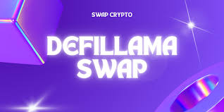

My Swap DefiLlama Obsession (and How it Ruined… I Mean, Enhanced My Yield Farming)
Okay, so picture this: It's 3 AM. I'm fueled by lukewarm coffee and the desperate hope of beating inflation (or at least, keeping pace with it). My laptop screen glows, illuminating the blurry numbers of DeFiLlama like a digital constellation. Am I losing my mind? Maybe. But I'm also chasing those juicy APYs, you know? And DeFiLlama, my friends, is my sherpa on this wild, wild ride.
For the uninitiated (bless your innocent hearts), DeFiLlama is basically the Yelp of decentralized finance. It aggregates data from across various DeFi protocols, giving you a snapshot of available yields, TVL (Total Value Locked), and a whole host of other metrics that make your head spin (in a good way, hopefully). And how does this impact yield farming? Let's just say it's gone from a blindfolded stumble through a dark alley to… well, still a bit of a stumble, but at least I can see the potholes now.
Before DeFiLlama, my yield farming strategy was basically throwing darts blindfolded at a board filled with obscure protocols. Sometimes I hit a bullseye (a 100% APY, oh sweet glory!), but more often than not, I landed squarely in a swamp of high gas fees and questionable security. It was thrilling, in a high-stakes casino kind of way, but also incredibly stressful. Remember the time I almost lost everything investing in that project with the suspiciously enthusiastic Telegram group? Yeah, not my proudest moment.
DeFiLlama changed that. It’s not a magic bullet – remember, it only shows what's reported, and some projects are, let's be generous, optimistic with their numbers – but it provides a crucial layer of transparency. Now, I can compare APYs across different platforms, spot potential red flags (like a sudden spike in TVL followed by a radio silence from the project's team – RUN!), and make more informed decisions. It's like having a slightly cynical but ultimately helpful financial advisor who’s also available 24/7.
Of course, it's not perfect. The data can lag, some protocols aren't listed, and frankly, the sheer volume of information can be overwhelming. I've spent hours scrolling through charts, comparing numbers, and generally losing myself in a rabbit hole of DeFi data. Is this a healthy obsession? I'm still working on that one. But I am making better choices now.
And that's what really struck me while writing this: it's not just about the numbers. DeFiLlama, with its relentless data aggregation, forces you to slow down, to critically analyze projects, and to think deeply about the risks involved. It's a reminder that, while the promise of high APYs is alluring, due diligence is non-negotiable. It's a lesson I've learned the hard way, and frankly, one I'm still learning.
So, is my DeFiLlama obsession healthy? Maybe not. Have I made questionable decisions even with DeFiLlama's help? Absolutely. But has it enhanced my yield farming experience? Without a doubt. It transformed my approach from reckless abandon to informed (though still slightly reckless) exploration. And hey, in the chaotic world of DeFi, that's a pretty significant upgrade. The journey, my friends, is more interesting than the destination, even if that destination involves a significantly larger crypto balance.

Chasing Yields Like a Pigeon After Crumbs: My DefiLlama Swap Adventures
Remember that scene in "Office Space" where they're watching the TPS reports churn? That's kind of how I feel sometimes watching my DeFi yields. Except instead of TPS reports, it's a chaotic ballet of APRs, fluctuating token prices, and the ever-present fear of impermanent loss – a fear that keeps me up at night, much like a particularly persistent mosquito.
So, naturally, I turned to DefiLlama. This amazing website, for the uninitiated, acts as a kind of central hub for DeFi data. It’s like a gigantic spreadsheet on steroids, providing insights into all sorts of protocols, farms, and pools. But what I was really after was its Swap functionality, a tool that lets you adjust your yield strategies with relative ease – at least, that's the theory.
My initial foray into this world was... ambitious. I threw myself into a bunch of high-APR pools, thinking I was going to become a DeFi millionaire overnight. Spoiler alert: I wasn’t. In fact, I probably lost more in gas fees than I actually earned. I felt like that guy in the lottery commercial who keeps buying tickets, convinced his is the winning one.
The problem, I realized, isn't the potential of high APRs; it's the risk attached. High yields often come with high volatility. Are you willing to bet on a token that might 10x – or, more likely, plummet to nothing? That's the gamble. And it's a gamble I wasn’t fully prepared for, at least not at the beginning.
DefiLlama's Swap function became my new best friend (or at least, a very helpful tool). I could easily compare different pools, assess their risk-reward profiles, and move my liquidity around without having to navigate a dozen different interfaces – a serious win in my book. It's not perfect; sometimes the data lags a bit, and understanding the nuances of different pools requires a decent amount of crypto-literacy. It’s not exactly user-friendly for your grandma (unless your grandma is a crypto wizard, then kudos to her!).
The journey, however, wasn't linear. I started with a simple strategy: diversify across several pools with slightly lower but more stable APRs. Then I got bold, experimenting with some more adventurous pools – let's just say, I learned the hard way that "high yield" doesn't always translate to "high profit." Sometimes it just translates to "high stress levels". There were definitely days when I questioned my entire life choices.
Through it all, DefiLlama's Swap feature served as a valuable learning tool. It allowed me to react swiftly to market changes, adjusting my positions to mitigate potential losses and capitalize on opportunities. It wasn't a magic bullet, but it certainly made the process less painful.
So, where am I now? Well, I'm still chasing yields, still learning, still occasionally panicking. But I'm smarter about it. I’ve learned to value stability over sensational APRs, and I appreciate the convenience of having a central hub like DefiLlama to help me manage my portfolio. The thrill of the chase hasn’t faded, but my approach has definitely evolved from reckless abandon to cautious optimism.
This journey, much like my experience with DefiLlama, wasn’t about finding the ultimate answer. It was about understanding the questions better, and learning how to navigate the messy, complex, and often exhilarating world of DeFi. And that, my friends, is a journey worth taking.
DefiLlama: My Accidental Journey to APR Nirvana (or, at least, slightly better returns)
Okay, confession time. I'm not a DeFi guru. I'm not even remotely close. I'm more of a "carefully tiptoeing into the crypto waters, hoping not to get swept away by a rogue whale" kind of guy. But like many, I'm obsessed with maximizing my meager crypto holdings. That's where DefiLlama came in – almost by accident.
It started innocently enough. I was browsing Reddit, probably procrastinating on something important (like laundry), when I stumbled across a post about maximizing Annual Percentage Rates (APR). Someone mentioned DefiLlama, and – being the technologically-challenged yet financially-ambitious individual I am – I decided to investigate.
My initial reaction? Overwhelm. It’s a website packed with data, charts, and acronyms that sound suspiciously like spells from a Harry Potter fanfic. I felt like Neo in the Matrix, bombarded with green code and desperately trying to understand the rules of this new financial reality.
But then… slowly… I started to get it. DefiLlama, at its core, is a beautifully terrifying aggregator of decentralized finance protocols. It pulls data from across the DeFi landscape, presenting a clear, albeit sometimes daunting, picture of available lending and staking opportunities. Think of it as a Kayak for crypto – but instead of comparing flight prices, you're comparing APRs. And let’s be honest, who doesn’t love a good APR comparison?
What struck me was the sheer variety. I had no idea how many different protocols existed, each offering slightly different terms and rewards. I felt a bit like a kid in a candy store, overwhelmed by the choices but secretly thrilled by the possibilities. This wasn’t just about finding the highest APR, which, let’s be frank, can sometimes be a siren song leading to risky ventures. It was about understanding the risks associated with each platform.
That’s where DefiLlama’s strength truly shines. It doesn’t just show you the APR; it gives you context. It links you to the underlying protocol, allowing you to delve deeper into the mechanics and risks involved. This isn’t just a simple numerical comparison; it’s a risk-assessment tool disguised as a sleek website.
Of course, it's not perfect. The data is only as good as the information provided by the individual protocols, and there’s always the inherent risk involved in DeFi. I’ve definitely had moments of doubt, staring at the screen, wondering if I'm about to make a catastrophic financial decision based on some slightly outdated APR figure. I’ve learned to double-check everything, even resorting to cross-referencing with other sites, just to be safe. It's a bit like playing financial detective, which, admittedly, is more exciting than doing my taxes.
Looking back on my DefiLlama journey, it hasn’t been about achieving some mythical "APR Nirvana." My returns are still modest, and I’m still learning. It's been about gaining a much deeper understanding of the DeFi landscape, making more informed decisions, and – dare I say it – having a bit of fun along the way.
The experience has been a reminder that the world of DeFi is a complex and evolving ecosystem. DefiLlama isn't a magic bullet, but it's a powerful tool that helps navigate its complexities. And that, my friends, is a valuable lesson in itself. Now, if you'll excuse me, I have some laundry to fold – and a few more APRs to compare.
Farming Tokens: My Accidental Journey into the Weird World of Swap DefiLlama
So, picture this: I'm scrolling through Twitter, avoiding actual work (don't tell my boss!), when I stumble across this term: "yield farming." Sounds idyllic, right? Fields of crypto, gently swaying in the DeFi breeze, showering me with passive income? Yeah, naive me thought so. Turns out, it's more like frantically tending a chaotic digital garden, battling bots and praying your precious tokens don't spontaneously combust. But within this chaos, I discovered Swap DefiLlama, and honestly, it's been a wild ride.
My first foray into yield farming involved a dizzying array of websites, confusing interfaces, and the constant nagging fear of getting rug-pulled (yes, it’s a real thing, and it’s terrifying). I felt like I was navigating a labyrinth designed by a mischievous goblin who’d had one too many magic mushrooms. Then I found DefiLlama. It's like having a slightly cynical but ultimately helpful guide in this strange, new world.
Swap DefiLlama isn't just some pretty dashboard showing you the latest token prices (although it does do that beautifully). It’s a gateway, a portal, if you will, into a vast ecosystem of decentralized exchanges (DEXs). You can browse hundreds of them, compare their fees, their liquidity pools, and most importantly, their APYs (Annual Percentage Yields). The APY, that siren song of the DeFi world, promising riches beyond your wildest dreams (or, more realistically, a slightly less measly interest rate than your savings account).
Now, I’m not going to lie, it’s still incredibly confusing. Understanding the intricacies of impermanent loss, liquidity provision, and the various tokenomics… it's enough to make your head spin. I spent a good hour staring at a chart, convinced I was unlocking some profound secret of the universe, only to realize I'd been looking at a graph depicting the price of… well, something very volatile.
But that's the beauty (and the terror) of it all. It's a constantly evolving landscape. Strategies that worked yesterday might be obsolete today. The feeling of discovering a lucrative, high-APY pool, feeling like you've cracked the code... it's a rush. Then, BAM, the rug gets pulled, or the APY drops faster than a lead balloon in a hurricane. It's a rollercoaster, and I'm strapped in, screaming with delight and terror in equal measure.
So, why am I bothering with all this? Why am I subjecting myself to this digital rollercoaster? Partly, it's the thrill of the chase. Partly, it's the hope of earning some extra crypto. But mostly, I think it's the fascination with this new financial frontier. It's messy, it's risky, and it's utterly unlike anything I've ever experienced before.
Looking back, my journey hasn't been about accumulating massive amounts of wealth. It's been about the learning process, the understanding of a complex system, the constant adaptation, and the occasional, unexpected windfall. Swap DefiLlama has been invaluable in this journey, acting as my (slightly sarcastic, ever-helpful) guide through the jungle.
This isn’t a get-rich-quick scheme, folks. If that's what you're looking for, you'll be sorely disappointed. Instead, it's a fascinating exploration of a rapidly changing landscape. And if, like me, you're willing to embrace the chaos and the occasional heartbreak, it might just be a thrilling ride. Just remember to do your research, diversify your investments, and maybe keep a few emergency tokens tucked away in a safe place. You never know when the goblin might decide to rearrange the labyrinth again.
Navigating the Wild West of Yield Farming: My DefiLlama Survival Guide (So Far)
Remember that rollercoaster you rode as a kid? The one that twisted and turned, leaving your stomach doing the cha-cha? Yield farming feels a bit like that, only instead of screaming children, you’ve got fluctuating APYs and the constant, nagging fear of rug pulls. Okay, maybe the screaming is still there – it’s definitely me, sometimes.
I've been dipping my toes (and occasionally my whole leg) into the world of decentralized finance (DeFi) for a while now, and let’s just say it's been… an education. I’m not a financial guru by any stretch of the imagination – more like a curious hamster on a wheel perpetually chasing that ever-elusive higher yield. And in that chase, I’ve found DefiLlama to be an invaluable tool, a kind of digital Sherpa guiding me through the sometimes treacherous terrain of volatile yield farms.
For the uninitiated, DefiLlama is a website that aggregates data from various DeFi protocols. Think of it as a price comparison site, but instead of comparing washing machines, you’re comparing the potential returns (and, crucially, the risks) of different yield farming strategies. It doesn’t tell you what to do, but it gives you the crucial information to make informed decisions – which, let’s face it, is 90% of the battle in this space.
Initially, I was overwhelmed. The sheer number of protocols, the jargon (LP tokens? Impermanent loss? Seriously, DeFi, could you try using normal words sometimes?), it felt like learning a new language – albeit one with the potential to (theoretically) make me rich. But slowly, painstakingly, I started to understand. DefiLlama became my go-to resource, allowing me to quickly compare APYs across various platforms, see the total value locked (TVL) in each protocol – a good indicator of its popularity (and, theoretically, stability, though that's never a guarantee in crypto land), and even identify red flags like abnormally high yields that often signal… well, you know.
One thing DefiLlama doesn't do, however, is eliminate the inherent risk. It's a tool, not a crystal ball. I’ve learned this the hard way. Remember that time I jumped into a yield farm promising a 1000% APY? Yeah, me neither. I’m still recovering from that near-death experience. But I'm smarter now, at least a little bit. I’ve started using DefiLlama to carefully research protocols, look at their TVL trends, and read community feedback before investing. I’m also learning to diversify, to spread my investments across multiple platforms to minimize risk. It's a slow process, a bit like learning to ride a bike without training wheels – lots of wobbles and the occasional fall, but the satisfaction of staying upright is worth it.
So, what have I learned from this whole wild ride? DefiLlama is a crucial tool, but it’s not a magic bullet. Yield farming is inherently risky, it’s a rollercoaster you might not want to ride if you’re risk-averse. The world of DeFi is constantly evolving, and staying informed is essential. But maybe most importantly, I’ve learned the value of patience, research, and (dare I say it?) a healthy dose of skepticism. It’s not about getting rich quick – it's about navigating the complexities of this fascinating space with a clear head and a willingness to learn from both successes and (lots of) failures.
This isn’t a tidy conclusion, because frankly, my journey through DeFi is far from over. There's still so much to learn, so many more protocols to explore, and so many more potential (and likely inevitable) mistakes to make. But that’s the thing about this journey: it's not about reaching a perfect destination, it's about the exploration itself. And DefiLlama, for now, is my trusty map.
Lost in the Yield Jungle: My Quest for Smart Routing on DeFiLlama
Remember that scene in Indiana Jones where he's navigating a maze of booby traps? That's kind of how I felt trying to find the best yield on Swap on DeFiLlama. Seriously, it's a jungle out there. Hundreds of protocols, each promising the moon in APR, all vying for your attention. It's enough to make you want to stick your crypto in a mattress and forget about it. But that’s not the DeFi way, is it?
So, I embarked on a quest. My holy grail? "Smart routing." The idea sounded simple enough: a tool that would automatically sniff out the best yield for my tokens, across all the different protocols listed on DeFiLlama. Think of it as your own personal, highly caffeinated Sherpa guiding you through the treacherous peaks of decentralized finance.
Except... it’s not quite that simple. At least, not yet. I spent hours, maybe days, poring over DeFiLlama's data, trying to understand how to leverage their information for truly intelligent routing. The data is there, undeniably impressive. Mountains of information on APYs, TVLs, and a bewildering array of other metrics. But actually using it to make informed decisions? That's a different beast altogether.
One issue is the sheer volume of protocols. It’s not just the sheer number, but also the fact that each protocol has its own quirks, its own hidden fees, its own… personality. Some are slick and modern, while others feel like they’re running on dial-up. This inconsistency makes comparing them directly—a crucial step in smart routing—tricky. It's like comparing apples and… well, sentient, blockchain-based oranges. Are they even comparable?
Then there's the ever-shifting landscape. APYs fluctuate constantly. A protocol that's king of the hill today could be a forgotten backwater tomorrow. This makes any automated routing system susceptible to becoming outdated almost instantaneously. It’s a bit like trying to write a self-driving car program for a demolition derby. You're constantly reacting to unexpected variables.
And finally, there's the question of trust. While DeFiLlama provides a valuable resource, it’s crucial to remember that it’s a data aggregator, not a financial advisor. You still need to do your own research (DYOR, as the cool kids say). Blindly trusting any automated system, no matter how sophisticated, is risky. Remember your grandma's advice: if something sounds too good to be true… well, you get the picture.
So, where does that leave us? My quest for perfect, effortless smart routing on DeFiLlama didn’t exactly end with a triumphant flourish. But it did lead me to a deeper appreciation for the complexity and potential of decentralized finance. It's messy, it’s challenging, and it’s far from perfect. But it’s also incredibly exciting.
I didn't find the ultimate solution, the magic bullet that would make me a DeFi millionaire overnight. What I did find, however, is a deeper understanding of the challenges involved, and a renewed appreciation for the need for careful research and critical thinking. Maybe that’s the real treasure after all: not the highest yield, but the journey to finding it. And that, my friends, is something worth more than any APR.
My DeFi Disaster (and How DefiLlama Saved My Bacon – Maybe?)
Okay, confession time. I once thought I was a DeFi whiz kid. I'd read all the articles, understood the basics (or so I thought!), and even spouted off about impermanent loss with the confidence of a seasoned crypto trader. Then reality hit harder than a rug pull. I threw some ETH and LINK into a liquidity pool, convinced I was about to rake in those juicy farming rewards. Instead? I watched my investment slowly… evaporate. Impermanent loss, my old nemesis, had struck.
The feeling? Let's just say it wasn't pleasant. It was like watching my carefully curated avocado toast budget disappear into thin air, except instead of toast, it was my hopes of early retirement on a tropical island. (Okay, maybe I’m exaggerating slightly, but you get the picture). The whole experience made me realize something crucial: understanding impermanent loss is one thing; managing it is a whole different beast.
That's where DefiLlama, this wonderfully chaotic and surprisingly useful website, comes in. It's like a digital financial advisor that doesn't judge your questionable investment choices (much). I'd used it before to casually browse TVL (Total Value Locked) numbers, but only after my little liquidity pool disaster did I truly appreciate its power.
DefiLlama's strength lies in its ability to provide a comprehensive overview of various DeFi protocols and their associated liquidity pools. You can dive deep into the nitty-gritty details, seeing exactly what tokens are paired, the current APR (Annual Percentage Rate), and, most importantly for us traumatized liquidity providers, the historical performance of those pools. You can even compare different pools for the same token pair to see which ones might offer a better risk-reward profile.
But here's where it gets tricky. DefiLlama gives you the data, but it doesn't tell you what to do with it. It's a tool, not a magic 8-ball. You still have to use your brain (and maybe a spreadsheet or two). Analyzing the historical data requires some critical thinking. Just because a pool historically performed well doesn't guarantee future success, right? It's like picking stocks based solely on past performance – a recipe for potential disaster, or at least a healthy dose of anxiety.
Honestly, there’s a bit of an art to this. I’m still learning. I find myself constantly weighing the potential for impermanent loss against the allure of high APRs. It's a delicate dance between greed and fear, much like life itself, isn’t it? Sometimes, the higher the APR, the higher the risk. It's a bit counterintuitive, but it’s a lesson learned the hard way.
So Swap DefiLlama , where does that leave me? Well, I’m still cautious. I'm not diving headfirst into every high-yielding pool I see. But DefiLlama has given me the tools to be more informed and, dare I say, slightly less terrified when venturing into the wild world of DeFi liquidity provision. I still think about that lost avocado toast budget (metaphorically speaking, of course), but now I have a much better chance of avoiding future financial meltdowns.
My journey with DefiLlama hasn’t been about finding a foolproof strategy to eliminate impermanent loss. That’s not realistic. Instead, it’s been about developing a more nuanced understanding of the risks involved and using data to make more informed decisions. And that, my friends, is a journey worth taking. Even if it means occasionally sacrificing some metaphorical avocado toast along the way.
The Great DeFi Llama Reward Hunt: (Or, How I Learned to Stop Worrying and Love the Spreadsheet)
Remember that feeling when you finally finish a massive jigsaw puzzle, only to realize a tiny piece is missing? That's kind of how I felt about my DeFi rewards until I stumbled upon DefiLlama's swap feature. I was drowning in a sea of different platforms, each with its own convoluted reward claiming process. It felt like searching for that missing puzzle piece in a galaxy-sized box of random bits. Exhausting, frustrating, and frankly, a little soul-crushing.
I’d been meticulously tracking my various yields – you know, the kind that promise financial freedom but often deliver a headache instead. I was using a Frankensteinian combination of browser bookmarks, handwritten notes (yes, really), and a somewhat-reliable spreadsheet. It worked... sort of. But it was slow, prone to errors, and about as efficient as using a spoon to dig a hole. I'd spend hours clicking through interfaces, copy-pasting addresses, and praying I didn't accidentally send my hard-earned crypto to the wrong place (a very real fear, let me tell you).
Then, a friend, bless their cotton socks, mentioned DefiLlama’s swap functionality. “It’s a game-changer!” they proclaimed, with the evangelical fervor usually reserved for discussing the latest sourdough starter recipe. I, being skeptical but desperately needing a better solution, decided to investigate.
At first, it felt a bit overwhelming. DefiLlama, with its vast array of data, can feel like walking into a library filled with ancient scrolls – intriguing, but slightly intimidating. Honestly, I almost backed out. I'm not the most tech-savvy person; I still occasionally accidentally reply-all to emails. But the lure of streamlining my reward-claiming process was too strong.
So, I dove in. And you know what? My friend was right. It wasn't magic, but it was close. Being able to see all my accumulated rewards, across various protocols, in one convenient dashboard was a revelation. It's like someone finally organized my digital sock drawer. (If my digital sock drawer contained cryptographic tokens, that is.)
The swap functionality itself is wonderfully intuitive. It’s not perfect – occasionally I’ve had to troubleshoot minor glitches, mostly user error on my part – but the overall experience is vastly superior to my previous, chaotic system. The process is streamlined, efficient, and, dare I say, almost enjoyable. Almost. Let's be real, dealing with gas fees is never fun, but DefiLlama helps you minimize them by aggregating your claims.
There’s still a small nagging voice in the back of my head, whispering about security risks. You're handing over access to your funds, after all. But I've found the process to be transparent, and DefiLlama's reputation generally seems solid. However, I'm still doing my due diligence – a healthy dose of paranoia is essential when dealing with cryptocurrency!
So, here I am, a converted DeFi Llama devotee. This isn't a perfect solution, and it's certainly not for everyone. But it's significantly improved my life, allowing me to spend less time wrestling with interfaces and more time… well, probably still wrestling with spreadsheets, but at least now it's a more organized wrestling match.
This article wasn't just about explaining DefiLlama's swap feature; it was about the journey from frustrated, overwhelmed crypto-user to someone who feels a little more in control of their digital assets. It’s a journey of embracing tools that simplify the complexity, a testament to the power of efficient systems, and a hearty reminder that even a slightly skeptical, email-reply-all-prone individual can conquer the wild world of DeFi – one efficient reward claim at a time.
Farming for Doge, Not for Gas Fees: My DefiLlama Swap Odyssey
Remember that time I tried to make sourdough bread during lockdown? Total disaster. Over-proofed, collapsed like a soufflé hit by a meteor. Turns out, baking is a delicate dance of timing and precision – much like optimizing gas fees in DeFi farming. Except, instead of a lopsided loaf, you're staring down the barrel of potentially crippling transaction costs. And that's not exactly chef's kiss.
I’ve been dabbling in DeFi farming for a while now. It's a bit like tending a digital vegetable patch, except your "vegetables" are crypto tokens, and your harvest depends on unpredictable market forces and – sigh – those ever-fluctuating gas fees. Anyone who's been there knows the gut-punch feeling of watching your meticulously planned yield farming strategy crumble under the weight of exorbitant Ethereum transaction fees. It's enough to make you want to go back to traditional farming, except, you know, no internet access there.
Recently, I stumbled upon DefiLlama’s Swap feature. Now, I’m not going to pretend I understood everything immediately. At first, I was like a bewildered chicken in a high-tech henhouse. All those different DEXs, different chains, different… everything! But after a bit of head-scratching (and maybe a few YouTube tutorials), the penny dropped.
DefiLlama’s Swap, in essence, acts as a comparison engine for decentralized exchanges. It lets you see the best rates and crucially the estimated gas fees across various networks. This is like having a supermarket price comparison app, but for your crypto farming. Instead of comparing broccoli prices, you're comparing the cost of swapping your stablecoins to get the best APY on a particular yield farm. Genius, right?
But here’s the thing: even with DefiLlama, gas fees can still be a wild card. It’s like trying to predict the weather in Scotland – you might get a sunny day, but you're more likely to get a sudden downpour. Network congestion can make the most meticulously planned swap a costly affair. There are days where I feel like I'm playing a high-stakes game of crypto roulette.
So, is DefiLlama a magic bullet for gas fee optimization? Not exactly. It's a powerful tool, no doubt, but it's still up to you to strategize. Timing your swaps during periods of low network activity is key. Consider using layer-2 solutions like Polygon or Arbitrum to drastically reduce gas costs. It's a learning curve, and I still find myself occasionally cursing the gas fees, but the potential rewards are substantial enough to justify the effort.
My sourdough bread might still be a culinary catastrophe, but my DeFi farming strategy has significantly improved thanks to DefiLlama. It’s not a perfect solution, but it’s a heck of a lot better than blindly throwing money at high gas fees. It’s a journey, not a destination, and this is just one leg of my exploration into the fascinating, frustrating, and frankly exhilarating world of decentralized finance. And hey, at least I haven’t had to contend with any rogue squirrels in my digital garden yet. That’s a win, right?
Chasing the Yield Mirage: My Adventures Tracking DeFi's Shifting Sands on DefiLlama
Remember that feeling when you finally found the perfect parking spot, only to realize it's right next to a giant pothole? That's kind of how yield farming feels sometimes. You find a protocol promising astronomical APRs, you jump in, and bam, a week later, it's half the yield. This constant chase for the best returns in decentralized finance (DeFi) is a wild ride, and DefiLlama's become my trusty (though slightly glitchy) map.
I've been poking around DeFi for a while now, initially drawn in by the siren song of "passive income" – a concept that sounds suspiciously like a unicorn to my skeptical ears. I’ve seen yields soar, plummet faster than a lead balloon, and even completely vanish into thin air (RIP, certain projects, you’ll never be forgotten). And throughout it all, DefiLlama has been there, a somewhat messy but undeniably useful dashboard charting the ever-shifting landscape of DeFi yields.
The site is, to be frank, a little overwhelming. It's a deluge of numbers, graphs, and acronyms that could send even a seasoned quant into a caffeine-fueled panic. But once you get the hang of it, it's like unlocking a secret code. You start to see the trends – the ebb and flow of capital, the rise and fall of different protocols, the often-chaotic dance of supply and demand. It's like watching the stock market, but with more… pizzazz. (And, let's be honest, considerably more potential for both massive gains and catastrophic losses.)
I've spent hours glued to DefiLlama's "Yields" section, practically living and breathing APRs (Annual Percentage Rates). It’s become a kind of morbid fascination. I track the migration patterns, almost like an ornithologist observing a flock of particularly volatile birds. One day, everyone's flocking to Curve, the next it's all about Balancer. And then, poof! They're all chasing some new shiny object promising a 1000% APR (which, let's be realistic, is probably a mirage, or worse).
But here's the thing about chasing yield: it's not just about the numbers. It's about understanding the underlying mechanisms, the risks involved, and the inherent volatility of the DeFi space. DefiLlama helps you see the big picture, but it doesn't offer financial advice. It's like having a really detailed map of a jungle – it shows you the paths, the rivers, maybe even some dangerous animals – but it doesn't guarantee you won't get lost, or worse, eaten by a particularly aggressive DeFi bear market.
One thing I've learned through this exploration? Diversification is your friend. Don't put all your eggs in one (high-yield) basket. The temptation is there, believe me, I know. But remember that parking spot next to the pothole? It's better to be safely parked a little further away, than to risk a flat tire chasing the seemingly perfect spot.
So, what have I actually taken away from this journey? More than just a slightly better understanding of DefiLlama's functionalities (though that's a bonus!). I've learned that yield farming, while potentially profitable, is a game of constant vigilance, research, and risk management. It requires more than just looking at the shiny numbers; you need to understand the underlying protocols, their security, and the potential for everything to go sideways. And that, my friends, is a lesson far more valuable than any fleetingly high APR. The chase itself has been the education.

My DeFi Dreams: Yield Aggregators, DefiLlama, and the Quest for the Perfect Latte
Remember that feeling? The one where you’re staring at your bank account, wishing it held enough for, say, a really good latte – the kind with oat milk, extra foam, and a sprinkle of magic? That’s kind of how I felt about my crypto portfolio before I discovered yield aggregators. Not the latte part, exactly – more the "wish I could make this money work harder" part.
And that’s where DefiLlama enters the picture. It’s like the Yelp of DeFi, only instead of restaurant reviews, you're comparing the yields offered by different yield aggregators. It's a crucial tool, an absolute game-changer, for navigating the sometimes-bewildering world of decentralized finance. Because let’s be honest, just understanding the different protocols involved – Yearn.Finance, Beefy.Finance, Aave – can feel like learning a new language. And a language with a volatile exchange rate at that!
So, what’s the big deal with these aggregator integrations on DefiLlama? Well, imagine trying to find the best latte in a city with a thousand coffee shops. You could wander around aimlessly, sampling various concoctions, risking mediocre coffee and wasted time. Or, you could check Yelp, compare reviews, and head straight to the top-rated café. DefiLlama does the same for your DeFi investments. It lets you compare the APYs offered by different aggregators, taking into account all the factors involved – risk, complexity, token lock-up periods – and make informed decisions.
But here’s the thing – and this is where it gets interesting – it’s not always straightforward. Sometimes the highest APY isn't the best choice. It's a bit like choosing between a sugary, artificially flavored latte that tastes amazing but gives you a sugar rush followed by a crash, versus a slightly more complex, artisanal brew that's satisfying but requires a bit more understanding. High yield often comes with higher risk. It's a balancing act.
DefiLlama helps you spot the potential pitfalls. It shows you the underlying protocols each aggregator uses, alerting you to any potential vulnerabilities or complexities. It's not a foolproof system – remember, DeFi is still the Wild West – but it offers a valuable layer of transparency and helps demystify the process. I’ve personally avoided a few potentially disastrous investments just by checking DefiLlama before jumping in headfirst.
And the integrations are constantly evolving! New aggregators are popping up all the time, each with its unique strategy and features. Keeping up feels a bit like trying to follow the ever-changing trends in artisanal coffee – you'll be forever searching for that perfect brew. Yet, it's a chase that is both exciting and satisfying. The thrill of discovering a hidden gem, a well-performing aggregator that's still under the radar, is definitely part of the fun.
This whole journey, this quest for the perfect DeFi latte, has taught me a lot about patience, research, and the importance of diversifying your portfolio (metaphorically and literally). DefiLlama has become an indispensable tool in that journey, and its integrations with yield aggregators are a significant contribution to making the DeFi landscape a little less daunting, a little more transparent, and a lot more accessible.
So Swap DefiLlama , what about that perfect latte? Well, I'm still searching for it, both in the real world and in the DeFi universe. But thanks to resources like DefiLlama, I feel a lot more confident in my quest. And that, my friends, is priceless.
tags: DeFi, Yield Farming, DeFiLlama, Swap, Decentralized Finance, Crypto Yield, Liquidity Mining, Automated Market Maker (AMM), Tokenomics, DeFi Strategies